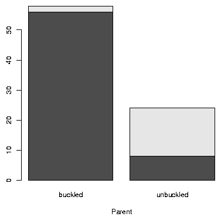

- page 6, bottom line
- Should read "although for the most part
knowledge of these functions is not essential..."
- page 16, exercise 1.12 #5
- This one is most easily done using
c() and the sequence operator :. (Please ignore
request to use jus seq and
rep.)
- page 19, line 17
- Should read "if y is too long..."
- page 19, line -9
- The greater than or equal operator is wrong. It
should be typed >= and not =>.
- page 26, line 3
- The data set Sitka is part of the
MASS package. This package needs to be loaded, such as it is
on page 24, to have the data set loaded into the workspace.
- page 30, line 8
- The variable names is time, not "times"
in the nym.2002 dataset
- page 34, line 1
- If you enter scan() in the command
line the console will appear to stop. It is waiting for a
terminating blank line.
- page 36, line 5
-
The data needs 4 terms, not 3, to match the
size of the names. Try:
> our.data = c(1,2,2,5); names(our.data) = 1:4
- page 36, second to last line
- The colors were specified with
col(gray(.7, .85, .95))
(A decimal point is used, not the comma with .7.)
To be clear, we can produce the pie chart with
> sales <- c(John=45,Jack=44,Suzy=46)
> col = gray(c(.7,.85,.9))
> pie(sales, main="sales", col=col)
- page 38
- Comment on using the function mean with a
factor variable should read "In the example with mean() an error is
returned, as factors are treated as categoric even if their levels
are given numeric-looking values."
- page 60, line -4
- The data set to detach is faithful:
> detach(faithful)
- page 63, excercise 2.46
- The formula for the skew is missing a 1/n. Althought the formula as is makes sense - more "skewed" data produces larger values in absolute value, it does not work to compare across different sample sizes without the 1/n.
- page 71, line 18
- The example showing how the labels for the
seat belt data can be made inadvertently switches the order of
"buckled" and "unbuckled." The correct line should be
> tmp = c("buckled","unbuckled") # less typing
to match lines 8 and 9 on the same page. Unfortunately, this error
propagates to the 4 subsequent displays of this data- the two on page
71, the one on page 72, and the one on page 73. This also effects the
Figure 3.1 on page 75 which is better presented with these commands (Figure ):
> x = matrix(c(56, 2, 8, 16), nrow = 2)
> tmp = c("buckled", "unbuckled")
> rownames(x) = tmp
> colnames(x) = tmp
> barplot(x, xlab = "Parent", beside = FALSE)
> barplot(x, xlab = "Parent", beside = TRUE)

Figure 1: (From Figure 3.1 page 75) Segmented and side-by-side barplots showing distribution ...
- page 83, lines 12-21
- The homedata dataset used in the
book is not the same as that in the UsingR package version 0.1-8.
This should be fixed by version 0.1-9 of the package, but for
reference with the modified data the results would
change in the display on page 83 to:
> attach(homedata)
> summary(y1970)
Min. 1st Qu. Median Mean 3rd Qu. Max.
0 57000 68900 70820 80500 297200
> summary(y2000)
Min. 1st Qu. Median Mean 3rd Qu. Max.
7400 161400 251700 268400 335600 1183000
> summary(y2000/y1970)
Min. 1st Qu. Median Mean 3rd Qu. Max.
0.740 2.878 3.579 Inf 4.310 Inf
> detach(homedata)
Seeing as values of 0 appear in the y1970 data, we can
replace those values and compute:
> hd = subset(homedata, subset=y1970 > 0)
> attach(hd)
> summary(y1970)
Min. 1st Qu. Median Mean 3rd Qu. Max.
9200 57000 68900 70830 80500 297200
> summary(y2000)
Min. 1st Qu. Median Mean 3rd Qu. Max.
7400 161400 251600 268300 335400 1183000
> summary(y2000/y1970)
Min. 1st Qu. Median Mean 3rd Qu. Max.
0.740 2.878 3.579 3.641 4.310 9.314
> detach(hd)
- page 87, line -6
- The first formula for the Pearson correlation is
missing a parenthesis in the denominator. It should be (xi - [`x])2, not xi -[`x])2.
- Page 108, line 16
- The boxplot command should have UA in place
of a US. Try
boxplot(AA,CO, DL,HP,NW,TW,UA,US)
Of course, it is more efficient to just use data frame notation for
these things:
boxplot(ewr[,3:10])
- Page 112, lines 12-16
-
The following code snippet is incorrect.
> library(MASS) # loads Cars93 data set
> mpg = with(Cars93,cut(MPG.city,c(0,17,25,55)))
> names(mpg) = c("bad","decent","excellent")
> price = with(Cars93,cut(Price,c(0,10,20,62)))
> names(price) = c("cheap","mid-priced","expensive")
It should have names replaced with levels
> library(MASS) # loads Cars93 data set
> mpg = with(Cars93,cut(MPG.city,c(0,17,25,55)))
> levels(mpg) = c("bad","decent","excellent")
> price = with(Cars93,cut(Price,c(0,10,20,62)))
> levels(price) = c("cheap","mid-priced","expensive")
The reason being that the variables mpg and price
are factors and we wish to rename their internal names, or
levels. Trying to use names will not work as expected as
there are 93 things to name in mpg, but only 3 names given in
the assignment statement. A such the first three values will be names,
the remaining 90 will have a <NA> value.
- Page 123, line 8
-
The names of the data frame at this point are a b V3 V4 and
not a b c d. The command names(df) <- letters[1:4] is
one way to assign those names.
- Page 123
- The data frame example fails with newer versions of R
as the line
> df[1:2,3:4] = cbind(11:12,13:14)
Dropping the i index will work:
> df[ ,3:4] = cbind(11:12,13:14)
- Page 130, line -1
- The correct variable name containing the
amounts given is called amounts and not "award."
The proper command should have been:
tmp = split(amount, ID)
- Page 132
- The command to set the background color for lattice
graphics is now
lattice.options(default.theme = "col.whitebg")
- Page 134, line 11
- The panel function is called
plot.regression, not panel.regression. Hence when
referring to the function on line 11, the argument should read
+ panel = plot.regression) # a new panel function
- page 135, line -9
- The variable name Pulse has spurious
parentheses.
- page 147, line 33,35
- The value 6,800 should be replaced with
6,200 in lines 33 and 35 to match the hypothetical 6,200 in the text.
- page 163, line 4
- The formula is for the standard deviation, not
the variance. (The variance would simply be np(1-p).)
- Page 186, line 5
- The position of z* and a is mixed up
in the formula display. It should read
|
a/2 = P(Z £ -z*), or, similarly 1 - a/2 = P(Z £ z*). |
|
- Page 203, line -6
- In Example 7.9, the boxplots are labeled
incorrectly. This occurs in the boxplot() call. It should
read
boxplot(list(placebo=x, drug=y), col="gray") #compare spreads
- page 209, line 3
- The name Wilcoxon is incorrectly spelled.
- page 220, line -8
- The alternative hypothesis should read
As HA: p > 0.113, we will use...
instead of the value p > 0.11.
- page 231,
- wilcox.test(x,...) is incorrectly written as
wilcox.text(...
- page 250, line -9
- The R code does not match the example. It
should read:
choose(100,35) * choose(65,40) * .35^35 * .35^40 * .30^25
- page 260, third paragraph
- The explanation for the number of
degrees of freedom in the chi-squared test of independence is not
right. The correct reasoning is to subtract the number of estimated
parameters, nr-1 + nc-1 from the usual degrees of freedom for the
chi-squared statistic nr·nc - 1. Algebraically we have
|
nr ·nc - 1 -(nr -1 + nc -1) = nr ·nc - nr -nc + 1 = (nr-1)(nc-1). |
|
- page 275, problem 9.20
- In the answers, the rivers data
set produced a warning when fit with fitdistr. As of R 2.2.1
this is no longer the case. Additionally, the estimated parameters
are quite different. This isn't necessarily better as a plot will
show. For this problem the default estimates for the optimizer are
not great, leading the algorithm to get trapped.
- Page 292, line -9
- The line coef(res)[1] should use the
variable res.mhr instead. This same error appears in several
other places including the next line (page 292, line -8), page 293
line 6, page 294 line 16, page 295 line 2, page 195 line -10, and
page 2967 line -9.
- page 292, subsection 10.2.3
- The res variable refers
to the res.mhr variable previously defined on page 282. The command
> res <- res.mhr
may be used to replace the version or res.
- page 335, line -12
- The sentence should read dj is the
mean for the jth level of x2.
- page 336, table 11.5
- The entry in the table for car A, drive c
should be 36.9, not 36.8.
- help pages, father.son
- Data set was used by Pearson,
not Galton as indicated.
- help pages, central.park
- The variable WX is
incorrectly documented.